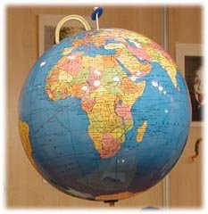

Sobre la llamada "Literatura Comprometida"
Artículo para la Revista Peonza. Abril de 2007

En otras ocasiones, cuando he tenido oportunidad de hablar de "literatura comprometida" (una denominación que no me entusiasma, como argumentaré en su momento) he defendido que el principal compromiso del escritor es con la propia literatura, entendida como el arte de imaginar, descubrir, comunicar y compartir a través de la palabra. Los escritores solemos olvidar en ocasiones que la escritura tiene varios milenios de existencia, que la narración oral lleva existiendo varios milenios más, y que nuestra responsabilidad es intentar ahondar desde una perspectiva distinta, o con una mirada más profunda, sobre asuntos que ya han sido tratados una y otra vez a lo largo de los siglos. Se dice que apenas hay temas nuevos y en ocasiones se ha hablado del agotamiento de la novela, tanto desde el punto de vista argumental como estilístico. Y se podría pensar que en el ámbito de la LIJ, en función del tipo de lector a que va destinada, los márgenes de maniobra son aún más estrechos, porque ni todos los temas se pueden tratar, ni las formas narrativas permiten demasiadas innovaciones. A mi juicio, esto es bastante discutible.
En comparación con la historia de la literatura en general, la LIJ tiene una vida relativamente corta. Durante décadas, jóvenes y niños han leído, entre otras cosas, adaptaciones de obras escritas originalmente para el público adulto. Si bien en algunos casos los recortes no han afectado al espíritu de la obra, como podría pensarse en el caso de algunas versiones de Julio Verne que yo recuerdo de joven (pienso, por ejemplo, en 20.000 leguas de viaje submarino), en otros casos la adaptación supuso una auténtica amputación literaria que acababa por desvirtuar la historia. Se podría poner como muestra de esto último las versiones para jóvenes de Los Viajes de Gulliver, cuya obra original fue denostada e incluso prohibida por los moralistas de la época y que, sin embargo, durante mucho tiempo fue ofrecida como ejemplo de literatura infantil y juvenil, después de descargarla de sus contenidos más agrios y satíricos. Esto, por no hablar de las versiones edulcoradas de cuentos clásicos o modernos, tras ser adaptadas por las factorías tipo Walt Disney y similares.
Si durante siglos cierta literatura para adultos ha sufrido censuras y persecuciones, las obras para niños y jóvenes han sido filtradas por el triple tamiz de la moral imperante, de la consideración de que a los jóvenes y a los niños se les debe proteger de ideas que pudieran interferir en su desarrollo intelectual y emocional y de preservar al sistema de ideas que pudieran subvertir el orden establecido. Durante las primeras épocas de todas las dictaduras sudamericanas eran frecuentes los expurgos en las bibliotecas escolares, seguidas de la quema o destrucción de libros considerados nocivos y la subsiguiente persecución de críticos, autores y profesores peligrosos.
Pero no hay que ir tan lejos. Basta con echar un vistazo a los libros recomendados para niños no hace mucho tiempo en las escuelas españolas. Se dirá que estas son escenas del pasado y eso es afortunadamente cierto pero solo en parte. No es infrecuente escuchar anécdotas de autores y autoras aún vivos, que relatan dificultades con tal o cual editor que rechazó un libro o intentó recortar una frase o una escena que se consideraban inadecuadas para cierta edad.
Para nuestra suerte o desgracia, las sociedades cambian, y lo hacen últimamente a un ritmo vertiginoso. Temas que hasta hace poco eran insólitos en las aulas (la homosexualidad, la guerra, la marginación, los conflictos sociales…) aparecen hoy como algo habitual e incluso frecuente en los estantes de las librerías y de las bibliotecas escolares. La lectura (no digo, de momento, la literatura), además, ha sido considerada como un vehículo de conocimiento, acercamiento y tratamiento de dificultades. Al socaire de una presunta necesidad social han aparecido decenas, cientos de libros para jóvenes, que tratan temas que pueden considerarse "delicados", que abordan desde la muerte de un ser querido o la separación familiar a los niños soldado o la prostitución infantil.
Bajo el lema de "todo vale, si el libro vende" e incluso desde la perspectiva más benévola del "todo vale, con tal de que los niños lean", las editoriales (y los autores, reconozcámoslo) nos hemos lanzado a una vorágine de escrituras y publicaciones que saturan librerías y aulas sin que en muchos casos los lectores tengan oportunidad de separar el fruto de la hojarasca. Y, lo que es peor, sin que haya tiempo de asentar criterios para determinar las diferencias entre una obra literaria y lo que es, simplemente, una lectura. La escuela no está fuera de los criterios productivistas y de la prisa que impregna la sociedad actual y, así, en muchos casos se considera que es mejor leer cinco libros durante el curso que dos, sin importar si los cinco son buenos y si han sido bien leídos. Por otro lado, se pretende que las lecturas complementen aspectos marginales de los programas escolares, desarrollando actitudes de tolerancia, solidaridad, convivencia…
Tras esta larga digresión vuelvo al hilo de la llamada "literatura comprometida", que (supongo) trata de denominar un conjunto de obras que utilizan temas, personajes o ambientes (reales o imaginados) con intención de imaginar y mostrar conflictos personales, sociales o políticos. Últimamente han sido varios los congresos, encuentros y monográficos que tratan sobre la "literatura social" o "la literatura de compromiso". Me confieso desconfiado ante las etiquetas y ante lo que puede convertirse en una moda. Y temo caer, el primero yo, en la superficialidad de la fácil confusión entre el medio y el fin, el mensaje y el contenido.
En un mundo tan cambiante y espasmódico como el que vivimos, niños y adolescentes se asoman a través de la televisión a sucesos y noticias que, por el vértigo del medio, no hay tiempo de digerir. Hoy en día los niños saben que las brujas, los ogros y los fantasmas no existen, pero el miedo tiene otros rostros. Y, si admitimos que un cuento o una novela tienen (también) un propósito catártico, no parecería mala idea que la literatura intentase ofrecer una mirada real o metafórica sobre lo que puede suponer una amenaza. ¿Es oportuno, pues, que existan obras que permitan conocer esa realidad?
Para responder a esta pregunta habría que recordar que el propósito de la literatura no es informar ni denunciar. Para eso están las organizaciones solidarias y los medios de comunicación. Una obra literaria debe recrear vidas y entornos, con unas ciertas condiciones estéticas, con el propósito de dejar huella en el corazón del lector, que no debe salir indemne de la historia. Es evidente que la pregunta anterior se responde por sí sola, porque existen centenares de obras que tratan de mostrar conflictos personales o sociales, pero ¿cuáles de ellas son auténtica literatura? ¿Cuántas corresponden a una tendencia, a una moda, a un interés? Dilucidar lo primero correspondería a los críticos y otros profesionales. Saber lo segundo resulta casi imposible. Yo no me atrevo más que a dar mi propia respuesta, como autor.
Cada escritor tiene el derecho y el deber de responder a sus propios estímulos a la hora de elegir temas, argumentos, estilo y estructura. Solo el autor de una obra conoce íntimamente qué le lleva a escribir una determinada historia. Tan perverso es que alguien escriba un libro pensando que es de venta fácil, arrastrado por el mercado o la moda, como que otro alguien, a priori, lo valore o lo denigre suponiendo ocultas razones para escribirlo. El auténtico y exclusivo valor de una obra literaria reside en su contribución literaria, aunque esto resulte tautológico. Si consigue aportar al lector (a cada lector, porque no todos somos iguales) una visión profunda, diferente, íntima y nueva sobre el mundo, podríamos pensar que ha cumplido su propósito. Si además le hace un poco más sabio, un poco más solidario, un poco más crítico con la injusticia, un poco más libre, un poco más abierto a las diferencias… resultará ser un poco más humano, lo que no es poco teniendo en cuenta los tiempos que corren.
Dicho esto, voy a enunciar una (quizá) escorada confesión personal. No creo que el arte o la ciencia sean productos neutros. Tienen, en su origen y desarrollo, un marcado carácter político y social, y ni siquiera voy a poner ejemplos, que considero obvios. Vivimos además en una época de confusiones, donde a las palabras se les intenta privar de su verdadero significado. El producto de la codicia no es una plusvalía, como tratan de disimular algunos directivos de empresas. El recorte de libertades no puede disfrazarse de protección a la ciudadanía, como intentan encubrir algunos políticos. Y una guerra no puede trastocarse desvergonzadamente en una misión de paz, disfrazándola con nombres eufemísticos y obscenos como Libertad Duradera. Puesto que vivimos por la palabra y de la palabra, considero que especialmente los escritores debemos estar al tanto para no caer en engaños y, porque que tenemos el privilegio de escribir, una de nuestras tareas es denunciar el disfraz y la ocultación. Y luego, si queremos y podemos, intentar dar voz a quienes no la tienen.
Se cuenta que durante la guerra civil, cuando Carpentier recorría España para apoyar la causa de la República, en la plaza de Minglanilla una anciana se le acercó diciéndole "Defiéndannos ustedes, que saben escribir". Me gustaría tener la imaginación necesaria para rememorar esa escena y sentir el corazón de esa mujer, hasta el punto de reconstruir su vida y escribir una novela solo a partir de esa frase. Esa petición desesperada resuena hoy en muchas partes del mundo, gritada en diferentes lenguas, y estremece. Puedo imaginarla en El Aaiún, Faluya, Bagdad, Guantánamo, Beirut, Gaza, Grozny y muchos lugares más.
En su Elizabeth Costello, Coetzee habla de la "literatura compasiva", como la que nos pone en el corazón del otro, que nos permite sentir el ser de otro. Prefiero con mucho la denominación de "literatura compasiva" a la de "literatura comprometida". El término "compromiso" no me repugna, pero un compromiso habla de una obligación contraída, de una palabra dada y de una fe empeñada, y la escritura es un ejercicio de libertad. Yo no tengo obligaciones más que con la literatura y con las personas a las que quiero; a nadie he hecho promesa de escribir incondicionalmente a favor de ninguna causa, y no puedo empeñar mi fe, que solo me alcanza para creer que un escritor es un individuo privilegiado.
"Escribo sin vergüenza las imágenes que otros tratar de ocultar", decía el austriaco Joseph Winkler; esta definición me resulta más próxima a lo que yo considero debe ser la literatura sin apellidos. Reclamo mi derecho a escribir así y ser juzgado solo por lo que consiga hacer, poco o mucho.
R.G.